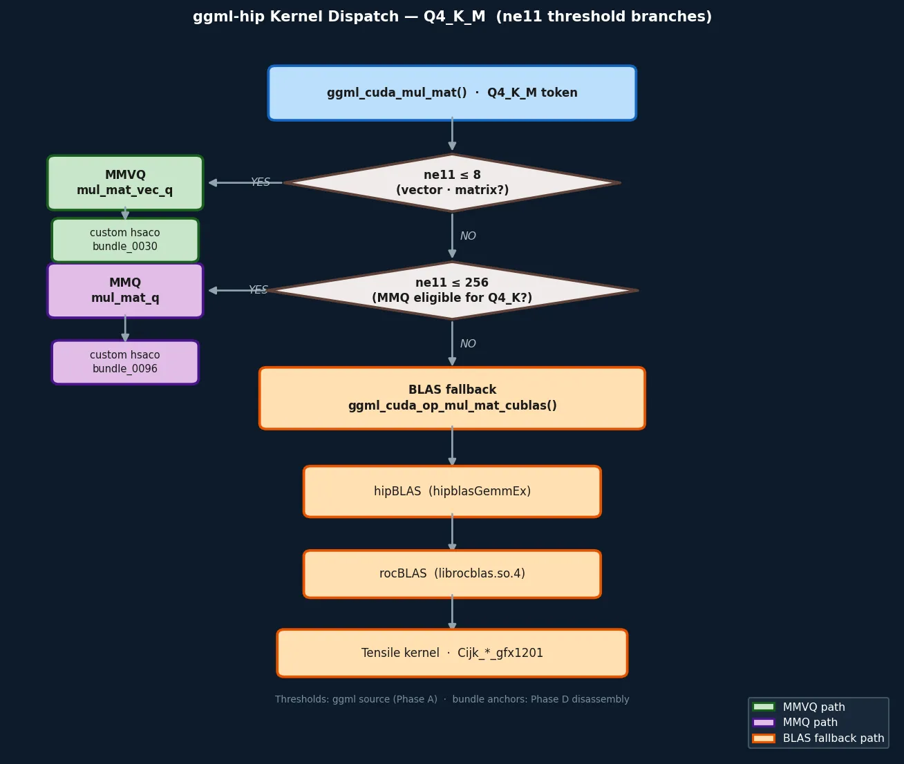

RX9070XT: Which kernel actually gets selected at runtime?
このページが追う問いは一つ。Q4_K_M を推論する Ollama は、RX9070XT 上で MMVQ・MMQ・BLAS のどれを使うのか？
経路はソースに書いてある。しかし実際に選ばれる経路は実行時にしか決まらない。
Phase A〜F の調査が何を固定し、何を固定できなかったかを、ここで一本の線として読めるようにした。
One question drives this page: when Ollama runs Q4_K_M on an RX9070XT, which path does it actually take — MMVQ, MMQ, or BLAS?
The paths exist in source. But which one is selected only becomes real at runtime.
This page traces what Phase A–F fixed, and what remains unresolved.
観測ポイント： 分岐を決める閾値はソースのどこにあるのか。
Observation target: Where in source is the threshold that decides the path?
実機でどの kernel が走っているかを直接読む前に、まず「理論上、どんな条件でどの経路に入るのか」をソースで固定する必要があった。
最初に読むべき場所は ggml_cuda_mul_mat() の dispatch ロジックだ。
Before trying to observe which kernel runs on hardware, we first needed to fix the theoretical routing: under what conditions does each path get selected?
The right starting point is the dispatch logic in ggml_cuda_mul_mat().
ここで分かること： 分岐は ne11（矩阵の列数 = prompt token 数に対応）で決まる。
短い prompt → MMVQ、中程度 → MMQ、長い prompt → BLAS。これはソースコードの事実であり、gfx1201 固有ではない。
What this tells us: Dispatch is determined by ne11 (matrix columns, corresponding to prompt token count).
Short prompt → MMVQ, medium → MMQ, long → BLAS. This is a source-code fact, not gfx1201-specific.

クリックで拡大 · Phase A ソース閾値 + Phase D bundle アンカーから生成
Click to enlarge · Generated from Phase A source thresholds + Phase D bundle anchors
観測ポイント： MMVQ・MMQ・BLAS の各経路に対応する gfx1201 hsaco が実際に fatbin に埋め込まれているか。
Observation target: Are gfx1201 hsacos for MMVQ / MMQ / BLAS actually embedded in the fatbin?
Phase C で /proc/<runner>/maps を確認し、12 ライブラリのロードを確認した。
Phase D では libggml-hip.so 内の .hip_fatbin（587 MiB）を解析し、
Phase E で gfx1201 ターゲットの hsaco を逆アセンブルした。
Phase C confirmed that 12 libraries are loaded via /proc/<runner>/maps.
Phase D analyzed the .hip_fatbin (587 MiB) inside libggml-hip.so.
Phase E disassembled gfx1201-target hsacos.
| Bundle | サイズSize | 主なシンボルKey Symbols | 役割Role | 対応経路Path |
|---|---|---|---|---|
bundle_0012 |
173 KB | dequantize_block_q4_K<float> |
Q4_K dequantQ4_K dequant | shared |
bundle_0019 |
337 KB | flash_attn_ext_f16<...> |
Flash AttentionFlash Attention | Attention |
bundle_0030 |
1019 KB | mul_mat_vec_q<Q4_K, 1, false> |
MMVQ anchor（decode 小バッチ）MMVQ anchor (decode small-batch) | MMVQ |
bundle_0037 |
17 KB | quantize_mmq_q8_1<layout0/1/2> |
MMQ repack（src1 → q8_1）MMQ repack (src1 → q8_1) | MMQ |
bundle_0039 |
332 KB | rope_multi / rope_neox / rope_norm |
RoPE familyRoPE family | RoPE |
bundle_0096 |
918 KB | mul_mat_q<Q4_K, 8, false> |
exact Q4_K MMQ anchor（prefill）Exact Q4_K MMQ anchor (prefill) | MMQ |
Kernels.so-000-gfx1201.hsaco |
— | Cijk_S_GA, Cijk_S_PostGSU3 |
BLAS/Tensile contraction familyBLAS/Tensile contraction family | BLAS |
※ gfx1201 の wavefront_size = 32（MI25 の 64 と異なる）。v_mfma 命令は現在の検査範囲では検出されていない。
※ gfx1201 wavefront_size = 32 (differs from MI25's 64). No v_mfma instructions detected in the current inspection window.
ここで分かること： MMVQ・MMQ・BLAS のすべての経路に対応する gfx1201 向けバイナリが存在する。 どの経路も「バイナリがない」という理由では動かない、ということはない。
What this tells us: gfx1201 binaries exist for all three paths — MMVQ, MMQ, and BLAS. None of these paths is blocked simply because the binary is missing.
観測ポイント： runtime を壊さずに、「どの dispatch 圏で実行しているか」の信号を得られるか。
Observation target: Can we obtain a signal for "which dispatch zone this run is in" without breaking the runtime?
rocprofv3・ROCBLAS_LAYER などの直接 observer はすべてブロック済み（→ Observer 制約マップ）。
唯一の現実的な手段は response JSON の prompt_eval_count を ne11 の proxy として使うことだった。
これはランタイムを壊さず、かつソース側の閾値（ne11 ≤ 8 / ≤ 256）と照合できる。
All direct observers (rocprofv3, ROCBLAS_LAYER, etc.) are blocked (→ Observer Constraint Map).
The only practical approach was using prompt_eval_count from response JSON as a proxy for ne11.
This doesn't break the runtime, and it can be cross-referenced against source thresholds (ne11 ≤ 8 / ≤ 256).
| case | prompt_eval_count | eval_count | eval_duration | 判定（近似）Assessment (approx.) |
|---|---|---|---|---|
short_np1 |
3 | 1 | — | MMVQ 圏 |
medium_np1 |
11 | 1 | — | bundle_0096 寄り（MMQ 側）bundle_0096-leaning (MMQ-side) |
long_np1 |
290 | 1 | — | 境界（fallback or chunking 未確定）Boundary — fallback or chunking, unresolved |
short_np16 |
3 | 16 | 0.1479s | decode-heavy / prompt MMVQ 圏decode-heavy / prompt MMVQ zone |
prompt_eval_count = 3）は ne11 ≤ 8 の MMVQ 圏に入っていると読むのが最も自然。
medium case（11）は bundle_0030 の `1..8` 圏を超えており、bounded cluster 内では bundle_0096 側がより自然。
long case（290）は BLAS fallback または internal chunking のどちらかであり、現時点では切り分けできない。
Step 3 — strongest current reading:prompt_eval_count = 3) most naturally falls into the MMVQ zone (ne11 ≤ 8).
The medium case (11) sits above the bundle_0030 `1..8` range, so within the bounded cluster it aligns more naturally with bundle_0096.
The long case (290) is either BLAS fallback or internal chunking — not yet distinguishable.
prompt_eval_count は response JSON の値であり、kernel launch 時の ne11 を直接読んでいない。
他に runtime を壊さない observer が存在しない現状では、これが現在の frontier。
Proxy limitations:
The above is the "most natural reading," not a confirmed dispatch judgment.
prompt_eval_count is from the response JSON — it does not directly read ne11 at kernel launch.
With no other runtime-safe observer available, this is the current frontier.
prompt_eval_count = 3）は MMVQ 圏に入ったと読むのが最も自然。
しかし dispatch の直接確認は observer 制約により不可能であり、
phase proxy による近似観測が現時点での限界。
On RX9070XT, gfx1201 binaries exist for all three paths — MMVQ, MMQ, and BLAS.
The short case (prompt_eval_count = 3) most naturally places in the MMVQ zone.
However, direct dispatch confirmation is blocked by observer constraints;
phase proxy approximation is the current frontier.
| 示せることCan Show | 示せないことCannot Show |
|---|---|
| dispatch 分岐の閾値（ne11 ≤ 8 / ≤ 256）がソースに存在する Dispatch thresholds (ne11 ≤ 8 / ≤ 256) exist in source | 実際に「今この MulMat で ne11 が何だったか」 What ne11 actually was for any given MulMat call |
| MMVQ・MMQ・BLAS の gfx1201 バイナリが fatbin に存在する gfx1201 binaries for MMVQ / MMQ / BLAS exist in the fatbin | それぞれのカーネルが live run で dispatch されたか Whether each kernel was dispatched in a live run |
| phase proxy（prompt_eval_count）が dispatch 圏の近似 signal を与える Phase proxy (prompt_eval_count) provides an approximate dispatch-zone signal | bundle_0096 が live short case で実際に踏まれたか（直接確認不可） Whether bundle_0096 was exercised in the live short case (not directly confirmed) |
| Cijk_* (BLAS/Tensile) family が gfx1201 向けに存在する Cijk_* (BLAS/Tensile) family exists for gfx1201 | Cijk_* が short live case に入ったかどうか Whether Cijk_* entered the short live case |
bundle_0096 を直接踏んだか、それとも同型の別 Q4_K MMQ bundle だったかは直接確定していない。Cijk_* family が live short case に入ったかも未確定。prompt_eval_count = 290 境界が fallback か internal chunking かは未確定。bundle_0096 itself or another structurally similar Q4_K MMQ bundle.Cijk_* family entered the short live case is also unresolved.prompt_eval_count = 290 boundary is fallback-driven or due to internal chunking is unresolved.bundle_0096 の live phase ownership と Cijk_* の参加有無を確認する。
bundle_0096 and presence/absence of Cijk_*.
→ Path Worklog（調査の時系列記録） → Path Worklog (chronological investigation log)